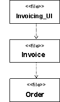

说明
依赖关系的一个重要用途是代表编译依赖关系。编译依赖关系存在于一个元素和编译它所需要的其他元素之间。 例如，在 C++ 中，编译依赖关系用 #include 语句表示。在 Ada 中，编译依赖关系用 with 子句表示。在 Java
中，编译依赖关系用 import 语句表示。通常，不应出现循环的编译依赖关系。
示例 1：
以下组件图说明了源文件之间的编译依赖关系。Invoicing_UI 文件（顶部）需要 Invoice，而 Invoice 又需要 Order 来进行编译。

图 1：示例编译依赖关系（普通）
|